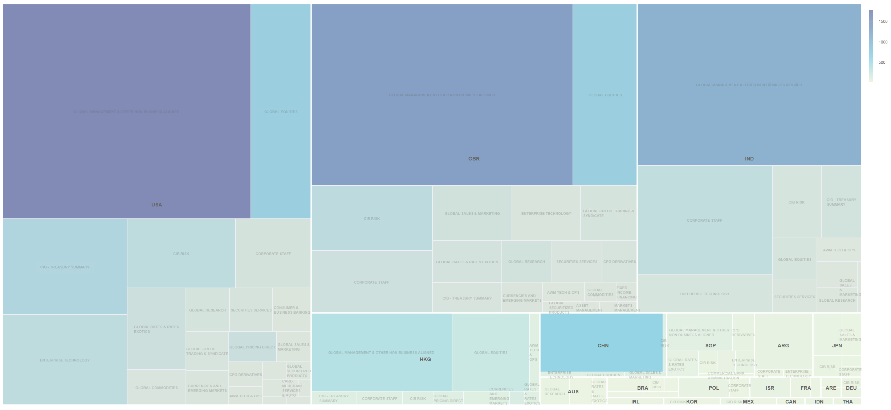
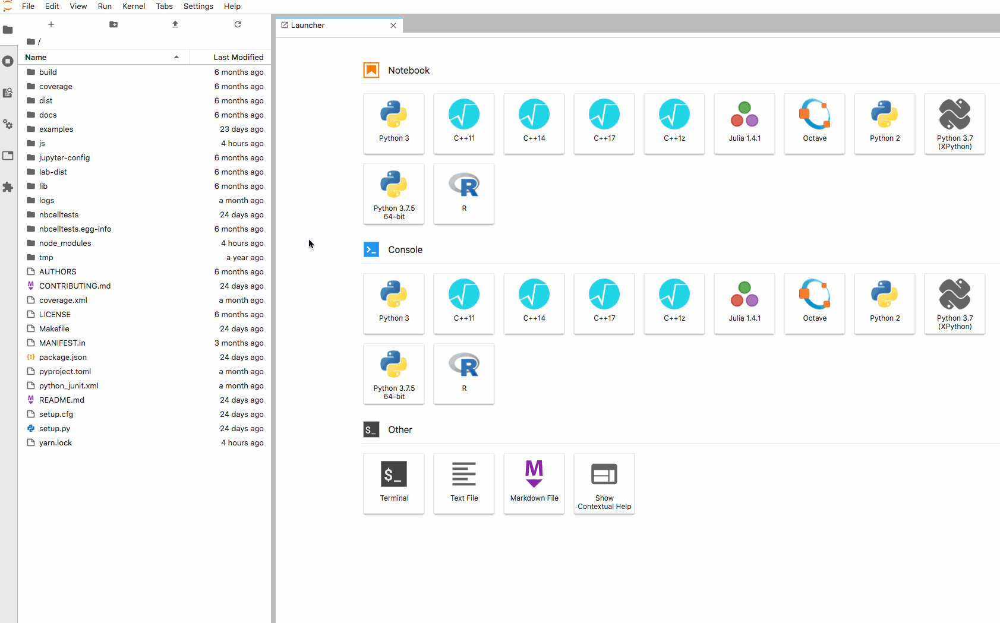
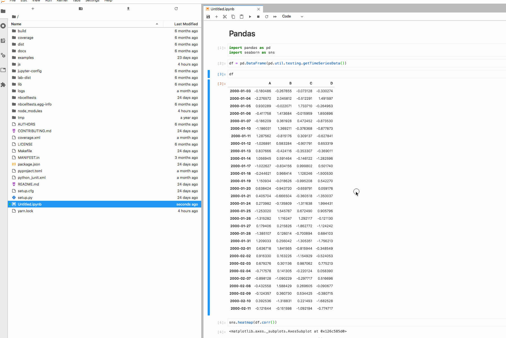
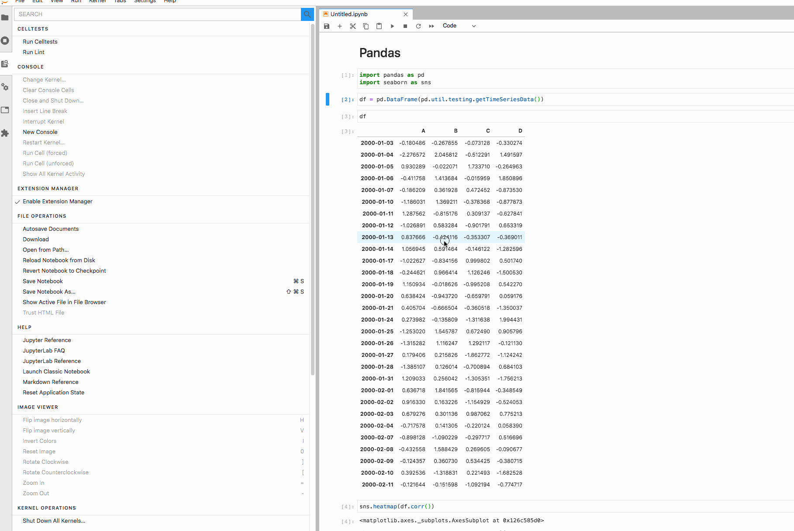
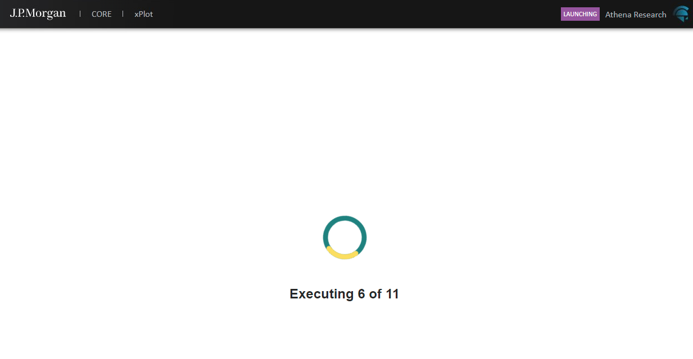
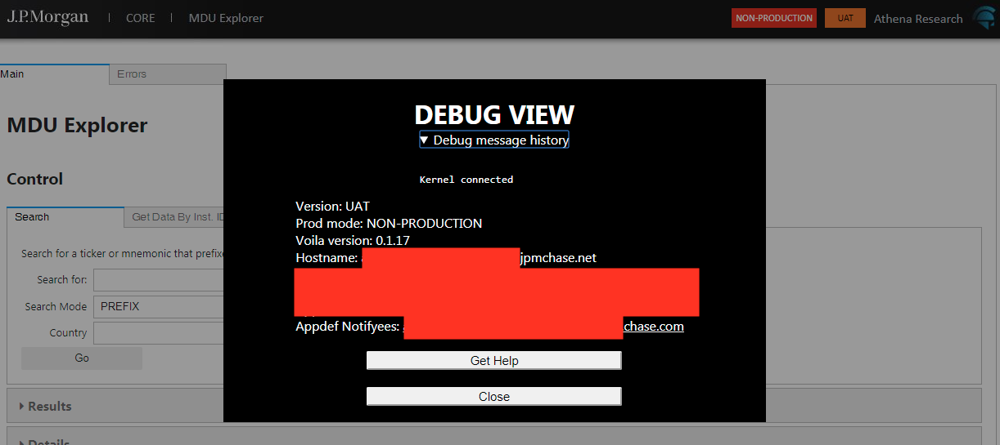
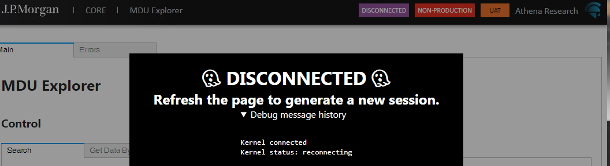
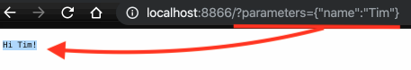
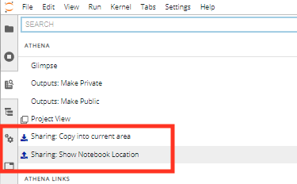
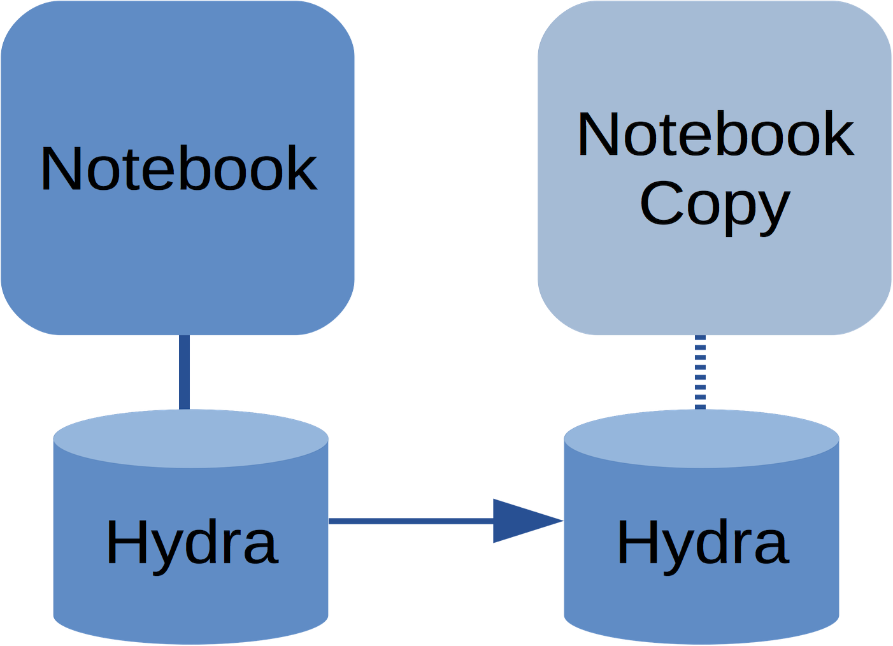

<!doctype html>
<html lang="en">
	<head>
		<meta charset="utf-8">
		<title>JupyterCon 2020 - Production Notebooks</title>
		<link rel="stylesheet" href="assets/dist/reveal.css">
		<link rel="stylesheet" href="assets/dist/theme/white.css" id="theme">
        <link rel="stylesheet" href="assets/plugin/highlight/monokai.css">
        <script async src="https://www.googletagmanager.com/gtag/js?id=G-PJBFEVM4RY"></script>
        <script>
          window.dataLayer = window.dataLayer || [];
          function gtag(){dataLayer.push(arguments);}
          gtag('js', new Date());
          gtag('config', 'G-PJBFEVM4RY');
        </script>
        <style>
            .reveal .smallfont {
                font-size: 18px;
            }
        </style>
	</head>
	<body>
		<div class="reveal">
			<div class="slides">
                <section data-markdown>
                    <script type="text/template">
                        <!-- .slide: data-background="#000000" -->
                        # Production Notebooks

                        Tim Paine - J.P. Morgan

                        <br>
                        <div style="display: flex; flex-direction: row; justify-content:center;align-items:center;">
                            </img>
                            <span>@timkpaine</span>
                        </div>
                    </script>
                </section>
                <section>
                    <section data-markdown data-separator="---">
                        <script type="text/template">
                            ## Talk Overview
                            - Background on J.P. Morgan/Athena and our Jupyter deployment <!-- .element: class="fragment" data-fragment-index="1" -->
                            - How we use Jupyter (infrastructure and development methodology) <!-- .element: class="fragment" data-fragment-index="2" -->
                            - Software Lifecycle and Library support for safe notebook use in production <!-- .element: class="fragment" data-fragment-index="3" -->

                        </script>
                    </section>
                </section>
                <section>
                    <section data-markdown data-separator="---">
                        <script type="text/template">
                            # Background

                            ---

                            </img>

                            One of the world's biggest banks <!-- .element: class="fragment" data-fragment-index="1" -->

                            <span>>40k technology employees</span> <!-- .element: class="fragment" data-fragment-index="2" -->

                            ~$10B annual technology investment <!-- .element: class="fragment" data-fragment-index="3" -->

                            ---

                            ## Athena

                            Python-based platform <!-- .element: class="fragment" data-fragment-index="1" -->

                            ~2000 developers <!-- .element: class="fragment" data-fragment-index="2" -->

                            ~40mm loc <!-- .element: class="fragment" data-fragment-index="3" -->

                            1000+ OSS packages <!-- .element: class="fragment" data-fragment-index="4" -->

                            <span>Hundreds to Thousands of production code releases <strong>per day</strong></span> <!-- .element: class="fragment" data-fragment-index="5" -->

                            <span><em>Managing python at scale without breaking the bank</em><br>M. Tselman - PyData 2017 (<a href="https://www.slideshare.net/PyData/managing-python-at-scale-without-breaking-the-bank">Slides</a>)</span> <!-- .element: class="fragment" data-fragment-index="6" -->

                            ---

                            </img>

                            Small, global team <!-- .element: class="fragment" data-fragment-index="1" -->

                            Focused on Analytics, AI/ML, and emerging technology <!-- .element: class="fragment" data-fragment-index="2" -->

                            ---

                            Hosted Jupyter platform serves thousands of daily users globally, mostly Business users and Quantitative Researchers <!-- .element: class="fragment" data-fragment-index="1" -->

                            </img> <!-- .element: class="fragment" data-fragment-index="2" -->
                        </script>
                    </section>
                </section>
                <section>
                    <section data-markdown data-separator="---">
                        <script type="text/template">
                            # How we use Jupyter

                            --- 

                            </img>

                            <span>We run Jupyter <strong>in production</strong> with three target deployments</span> <!-- .element: class="fragment" data-fragment-index="1" -->

                            ---

                            JupyterLab (1 deployment for ~1.5k users, libraries available to run instances locally)
                            
                            Static reports using NBConvert and Papermill (hundreds scheduled daily) <!-- .element: class="fragment" data-fragment-index="1" -->                            

                            Live applications using Voilà and Panel (~50 in production, >100 in development)  <!-- .element: class="fragment" data-fragment-index="2" -->
                            
                            ---

                            ## Infrastructure support

                            Scheduler suitable for both batch and HA jobs (called "Bob") <!-- .element: class="fragment" data-fragment-index="1" -->
                            
                            Distributed, replicating object store (called "Hydra") <!-- .element: class="fragment" data-fragment-index="2" -->
                                
                            Used for both data and code (as a monorepo) <!-- .element: class="fragment" data-fragment-index="3" -->
                            
                            Allows you to look at "slices", union them together backed by a shared "production" layer <!-- .element: class="fragment" data-fragment-index="4" -->

                            ---

                            ## What does **production** mean?

                            For this talk, focusing on production reports rather than our JupyterHub-style deployment infrastructure  <!-- .element: class="fragment" data-fragment-index="1" -->

                            Share functionality amongst a larger group, or with non-technical users <!-- .element: class="fragment" data-fragment-index="2" -->
                            
                            <em>"Can I hide the code and just see the ouputs?"</em> <!-- .element: class="fragment" data-fragment-index="3" -->
                            
                            Run the notebook in some automated fashion <!-- .element: class="fragment" data-fragment-index="4" -->
                            
                            Stable, testable, deployable, extensible <!-- .element: class="fragment" data-fragment-index="5" -->

                            --- 
                            
                            ## "I Don't Like Notebooks"

                            Avoid common pitfalls and notebook antipatterns <!-- .element: class="fragment" data-fragment-index="1" -->

                            Notebooks are useful for quickly experimenting or iterating <!-- .element: class="fragment" data-fragment-index="2" -->

                            Used to present text and data together <!-- .element: class="fragment" data-fragment-index="3" -->

                            All library development should be done in an IDE <!-- .element: class="fragment" data-fragment-index="4" -->

                            --- 

                            ## Linearly-Executed Notebooks

                            Notebooks execute top-to-bottom for both reports and apps  <!-- .element: class="fragment" data-fragment-index="1" -->

                        </script>
                    </section>
                </section>

                <section>
                    <section data-markdown data-separator="---">
                        <script type="text/template">
                            # SDLC and libraries

                            ---

                            We currently have two target deployments of "production" notebooks

                            Static reports based on NBConvert and Papermill  <!-- .element: class="fragment" data-fragment-index="1" -->

                            Voilà applications  <!-- .element: class="fragment" data-fragment-index="2" -->

                            ---

                            How do you keep these applications from breaking in a codebase that updates hundreds of times per day?

                            ---

                            </img>

                            <div style="display: flex; flex-direction: row; justify-content:center;align-items:center;">
                                </img>
                                <span>@jpmorganchase/nbcelltests</span>
                            </div>
    
                            ---

                            `nbcelltests` is a library we've been developing that lets us lint and test notebooks.

                            ---

                            ## Prior art

                            <div style="display: flex; flex-direction: row; justify-content:center;align-items:center;">
                                </img>
                                <span>@computationalmodelling/nbval</span>
                            </div>

                            <span><code>nbval</code> is a great library for reproducibile notebooks</span>  <!-- .element: class="fragment" data-fragment-index="1" -->

                            It compares the stored outputs of a notebook with the outputs generated by a notebook  <!-- .element: class="fragment" data-fragment-index="2" -->

                            ---

                            But for us, we can't always store outputs
                            
                            Notebook outputs are purged to remove sensitive data  <!-- .element: class="fragment" data-fragment-index="1" -->

                            <span>Most of what our notebooks do is temporal in nature, meaning it will <b>never</b> match the previous outputs</span>  <!-- .element: class="fragment" data-fragment-index="2" -->

                            ---
                            
                            ## Prior (concurrent?) art

                            <div style="display: flex; flex-direction: row; justify-content:center;align-items:center;">
                                </img>
                                <span>@nteract/testbook</span>
                            </div>

                            <span><code>testbook</code> is a promising library for unit-testing your notebook</span>  <!-- .element: class="fragment" data-fragment-index="1" -->

                            Does not allow for as invasive mocking as we do, but we'll be looking integrate with this library  <!-- .element: class="fragment" data-fragment-index="2" -->

                            ---

                            ## nbcelltests

                            <span><code>nbcelltests</code> has two main features</span>  <!-- .element: class="fragment" data-fragment-index="1" -->

                            <ul>
                                <li>Notebook structural linting</li>  <!-- .element: class="fragment" data-fragment-index="2" -->
                                <li>Cumulative cell testing</li>  <!-- .element: class="fragment" data-fragment-index="3" -->
                            </ul>

                            ---

                            ## Structural linting

                            Designed to enforce best practices and the concept of linearly executed notebooks  <!-- .element: class="fragment" data-fragment-index="1" -->

                            - Lines per cell  <!-- .element: class="fragment" data-fragment-index="2" -->
                            - Cells per notebook  <!-- .element: class="fragment" data-fragment-index="3" -->
                            - Number of function and class definitions  <!-- .element: class="fragment" data-fragment-index="4" -->
                            - Kernelspec + Magics  <!-- .element: class="fragment" data-fragment-index="5" -->
                            - Export to module and run a python linter   <!-- .element: class="fragment" data-fragment-index="6" -->

                            ---

                            ## Cumulative cell testing

                            <span><code>nbcelltests</code> lets you write tests around your cells</span>  <!-- .element: class="fragment" data-fragment-index="1" -->

                            for each cell, we generate a test that builds on the previous cells  <!-- .element: class="fragment" data-fragment-index="2" -->

                            ```python
                            # patch a function used in your cell
                            with patch("patching.module.used.in.cell") as m:

                                %cell  # a special magic that means
                                       # "inject the cell contents here"

                                # write assertions against your mocked up functions
                                assert m.call_count == 5
                            ```
                            <!-- .element: class="fragment" data-fragment-index="3" -->

                            ---

                            ## SDLC support

                            Linting and testing integrated with IDE <!-- .element: class="fragment" data-fragment-index="1" -->

                            All notebooks going to production must pass lint and tests <!-- .element: class="fragment" data-fragment-index="2" -->

                            <span>Notebooks under VC, diffs presented with <code>jupytext</code></span> <!-- .element: class="fragment" data-fragment-index="3" -->

                            <div style="display: flex; flex-direction: row; justify-content:center;align-items:center;">
                                </img>
                                <span>@mwouts/jupytext</span>
                            </div> <!-- .element: class="fragment" data-fragment-index="3" -->

                            ---

                            Let's take a quick look at `nbcelltests` in action via its `jupyterlab_celltests` front end extension

                            ---

                            </img>

                            ---

                            </img>

                            ---

                            </img>

                            ---

                            </img>

                            <div style="display: flex; flex-direction: row; justify-content:center;align-items:center;">
                                </img>
                                <span>@jpmorganchase/nbcelltests</span>
                            </div>
    

                        </script>
                    </section>
                </section>


                <section>
                    <section data-markdown data-separator="---">
                        <script type="text/template">
                            # Extras

                            Things that help make production notebooks run smoothly

                            ---

                            ## Voilà Prelaunch Hook

                            Prelaunch hook allows us to inspect the tornado request and inject cells to do authentication, user impersonation, logging, production validation, and more elaborate custom styling.  <!-- .element: class="fragment" data-fragment-index="1" -->
                            
                            <div style="display: flex; flex-direction: row; justify-content:center;align-items:center;">
                                </img>
                                <span>@voila-dashboards/voila (PR)</span>
                            </div> <!-- .element: class="fragment" data-fragment-index="2" -->

                            ---

                            </img>

                            ---

                            </img>

                            ---

                            </img>

                            ---

                            ## Voilà + Papermill

                            With Papermill plugged into Voilà, query parameters are automatically turned into notebook parameters, allowing users to preconfigure Voilà apps with custom links<!-- .element: class="fragment" data-fragment-index="1" -->

                            <div style="display: flex; flex-direction: row; justify-content:center;align-items:center;">
                                </img>
                                <span>@voila-dashboards/voila (PR)</span>
                            </div> <!-- .element: class="fragment" data-fragment-index="2" -->

                            </img><!-- .element: class="fragment" data-fragment-index="3" -->

                            ---

                            </img>
                            
                            Leverage template notebooks to share common boilerplate, encourage good patterns, save team templates. <!-- .element: class="fragment" data-fragment-index="1" -->
                            
                            <div style="display: flex; flex-direction: row; justify-content:center;align-items:center;">
                                </img>
                                <span>@jpmorganchase/jupyterlab_templates</span>
                            </div> <!-- .element: class="fragment" data-fragment-index="3" -->
                            
                            ---

                            ## Kernel wrapper

                            With some slight modifications we can do resource limits on top of ipykernel <!-- .element: class="fragment" data-fragment-index="1" -->

                            ```python
                            def my_custom_kernel(profile, connectionFile, rlimits: dict):
                                # Restrict CPU
                                resource.setrlimit(resource.RLIMIT_CPU,
                                    (rlimits['cpu_soft'], rlimits['cpu_hard']))

                                # Restrict Mem
                                resource.setrlimit(resource.RLIMIT_AS,
                                    (rlimits['mem_soft'], rlimits['mem_hard'])) 

                                # Launch ipykernel
                                ipykernel.kernelapp.launch_new_instance(
                                    argv=['-f', connectionFile, '--profile', profile]
                                )
                            ``` 
                            <!-- .element: class="fragment" data-fragment-index="2" -->


                            Useful for collecting stats <!-- .element: class="fragment" data-fragment-index="3" -->

                            ---

                            ## P2P Copying in JupyterLab

                            During the development process, it is useful to copy from person to person. <!-- .element: class="fragment" data-fragment-index="1" -->

                            With Hydra underneath, it is easy to copy from one slice to another. <!-- .element: class="fragment" data-fragment-index="2" -->

                            ---

                            </img> <!-- .element: class="fragment" data-fragment-index="3" -->

                            </img> <!-- .element: class="fragment" data-fragment-index="4" -->


                            ---

                            ## JupyterLab Autoversion

                            Hydra stores all transactions, so we have a log of every save of every notebook. <!-- .element: class="fragment" data-fragment-index="1" -->

                            <span>But for those without such a backing store, <code>jupyterlab_autoversion</code> will transparently commit every save to a backling storage mechanism (git by default)</span> <!-- .element: class="fragment" data-fragment-index="2" -->

                            <div style="display: flex; flex-direction: row; justify-content:center;align-items:center;">
                                </img>
                                <span>@timkpaine/jupyterlab_autoversion</span>
                            </div> <!-- .element: class="fragment" data-fragment-index="3" -->


                        </script>
                    </section>
                </section>

                <section data-markdown>
                    <script type="text/template">
                        <!-- .slide: data-background="#000000" -->
                        Tim Paine
                        
                        J.P. Morgan

                        <br>

                        <div style="display: flex; flex-direction: column; justify-content:center;align-items:center;">
                            <div style="display: flex; flex-direction: row; justify-content:center;align-items:center;">
                                </img>
                                <span>@timkpaine</span>
                            </div>
                            <div style="display: flex; flex-direction: row; justify-content:center;align-items:center;">
                                </img>
                                <span>@jpmorganchase/nbcelltests</span>
                            </div>
                        </div>
                    </script>
                </section>


            </div>
		</div>
		<script src="assets/dist/reveal.js"></script>
        <script src="assets/plugin/markdown/markdown.js"></script>
        <script src="assets/plugin/highlight/highlight.js"></script>
        <script src="assets/plugin/notes/notes.js"></script>
		<script>
			Reveal.initialize({
				center: true,
				controls: true,
				history: true,
				plugins: [ RevealMarkdown, RevealHighlight, RevealNotes ],
				progress: true,
                slideNumber: true
			});
        </script>
        
	</body>
</html>
